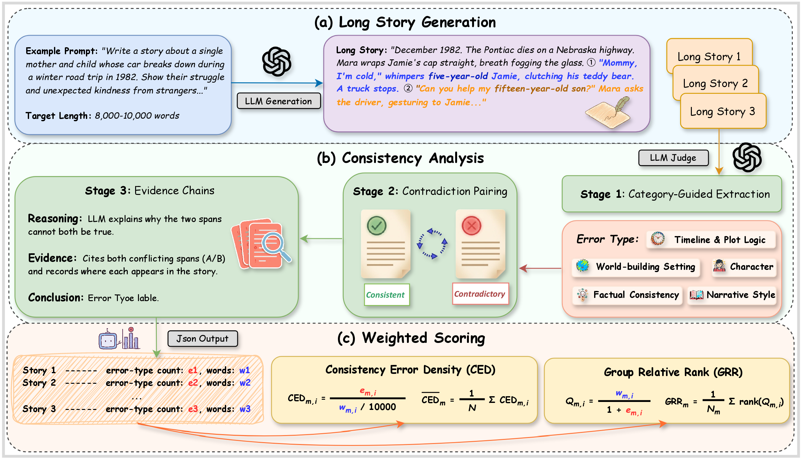
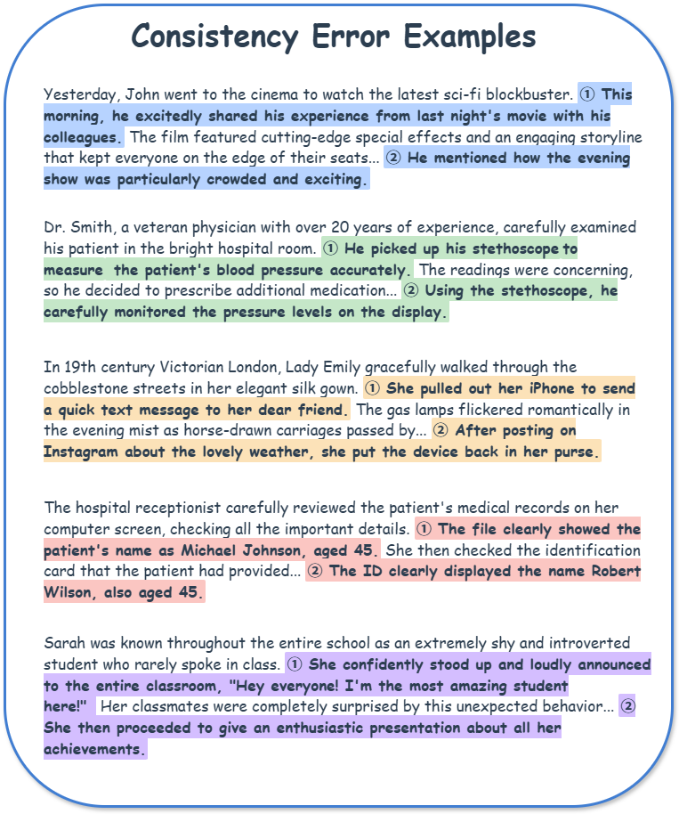
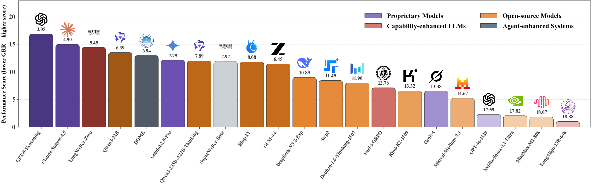
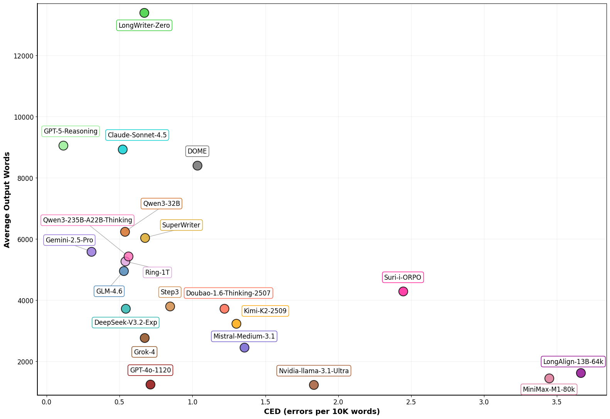
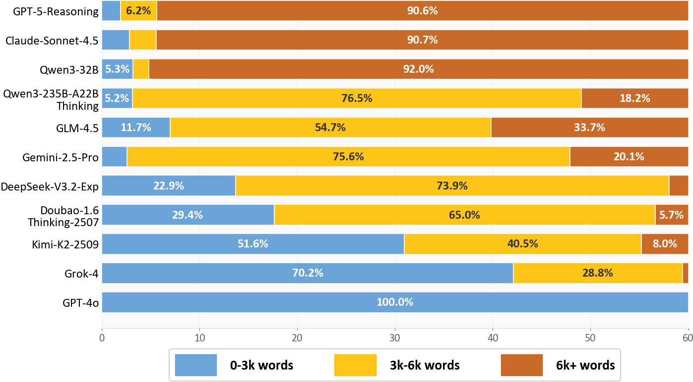
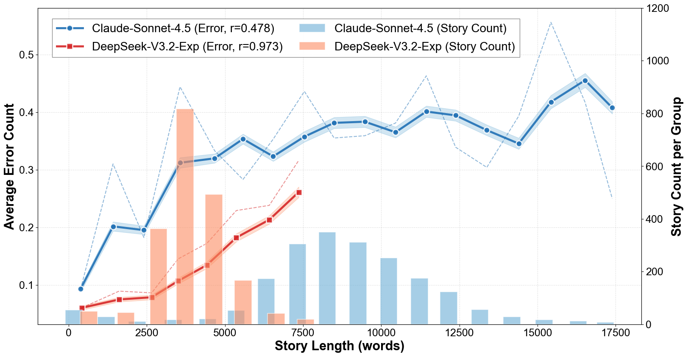
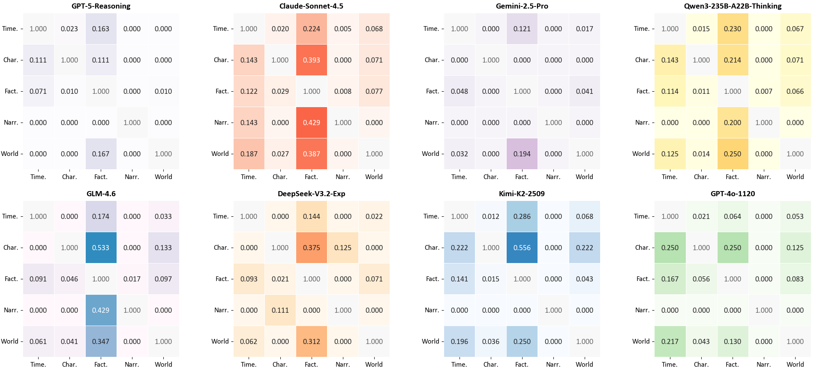
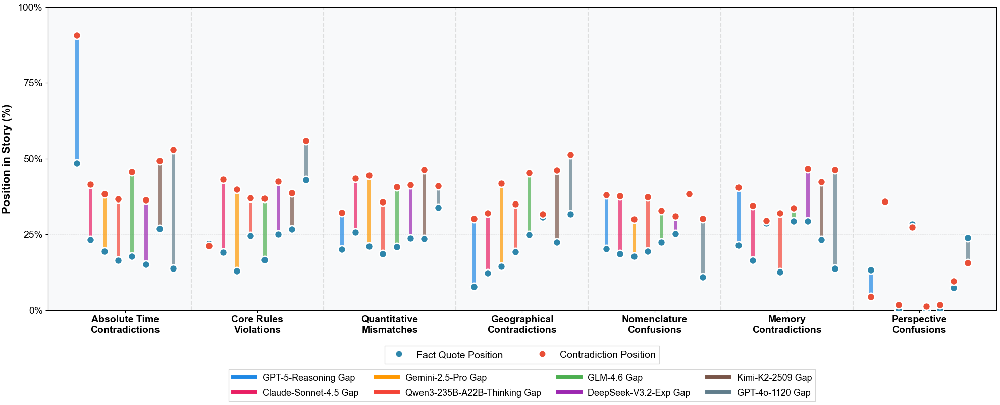

1. Overview
ConStory-Bench focuses on consistency in ultra-long narrative generation. It contains 2,000 prompts across four task scenarios, with outputs targeting 8,000-10,000 words.
We pair the benchmark with ConStory-Checker, a three-stage evidence-grounded evaluator over five error categories and 19 subtypes, and report standardized CED/GRR metrics.

Figure 1: Overview of ConStory-Bench. (a) 2,000 prompts for long-story generation, (b) ConStory-Checker contradiction extraction and evidence chaining, (c) CED/GRR-based evaluation.
Research Questions
We structure our investigation around the following research questions:
- To what extent do current LLMs maintain narrative coherence in ultra-long text generation, and do different models exhibit similar distributions of consistency error types?
- How do consistency errors scale as a function of output length across different LLM architectures?
- What underlying factors contribute to the emergence of consistency errors, and are there identifiable signals that reliably predict their occurrence?
- Do different types of consistency errors systematically co-occur, or do they arise independently?
- How are consistency errors distributed across positions within long-form generated narratives?
Main Contributions
- We introduce ConStory-Bench, a benchmark for evaluating narrative consistency in long-form story generation, with four task scenarios and a taxonomy of five error categories and 19 fine-grained subtypes.
- We develop ConStory-Checker, an automated evaluation pipeline that detects contradictions and supports each judgment with exact textual evidence.
- We present evaluation results across proprietary and open-source models, capability-enhanced models, and agent-enhanced systems, with systematic analysis guided by five research questions.
2. ConStory-Bench: Task and Construction
ConStory-Bench is designed to systematically detect and quantify consistency in long-form narrative generation. Unlike existing benchmarks that focus on fluency or style, we specifically target consistency errors that emerge over extended contexts.
2.1 Dataset Construction
Sources and Selection
We curate long-context narrative material from seven diverse public corpora: LongBench, LongBench_Write, LongLamp, TellMeAStory, WritingBench, WritingPrompts, and WikiPlots. We select passages with clear plot progression, multiple interacting entities, and explicit temporal movement—characteristics that naturally induce consistency challenges.
Prompt Construction
To create realistic generation scenarios, we convert story segments into prompts through context-aware rewriting. We identify natural breakpoints (turning points, unresolved subplots, elaboration opportunities) and generate prompts for four task scenarios:
- Generation: Complete story instantiation from scratch
- Continuation: Context-preserving narrative extension
- Expansion: Focused segment elaboration
- Completion: Coherent gap-filling
This process yields 2,000 prompts distributed across the four task types, each targeting distinct consistency challenges.
| Task Type | Count | Percentage |
|---|---|---|
| Generation | 748 | 37.4% |
| Continuation | 429 | 21.5% |
| Expansion | 419 | 21.0% |
| Completion | 394 | 19.7% |
| Total | 2,000 | 100% |
2.2 Consistency Error Taxonomy
We develop a hierarchical taxonomy grounded in narrative theory, comprising five top-level categories and 19 fine-grained error types:

Figure 2: Representative consistency error examples. Highlighted segments show contradictions across five categories detected by ConStory-Checker.
| Error Type | Sub Error Type |
|---|---|
| Timeline & Plot Logic | Absolute Time Contradictions |
| Duration Contradictions | |
| Simultaneity Contradictions | |
| Causeless Effects | |
| Causal Logic Violations | |
| Abandoned Plot Elements | |
| Characterization | Memory Contradictions |
| Knowledge Contradictions | |
| Skill Fluctuations | |
| Forgotten Abilities | |
| World-building & Setting | Core Rules Violations |
| Social Norms Violations | |
| Geographical Contradictions | |
| Factual & Detail Consistency | Appearance Mismatches |
| Nomenclature Confusions | |
| Quantitative Mismatches | |
| Narrative & Style | Perspective Confusions |
| Tone Inconsistencies | |
| Style Shifts |
Table 2: Consistency-error taxonomy used by ConStory-Bench, comprising five categories and 19 subtypes.
2.3 Automated Error Detection Pipeline
We introduce ConStory-Checker, an automated LLM-as-a-judge pipeline for scalable and auditable consistency evaluation. The framework advances from broad candidate mining to fine-grained error labeling through four stages:
Category-Guided Extraction
Narratives are scanned using category-specific prompts across five dimensions to extract spans likely to contain contradictions.
Contradiction Pairing
Extracted spans are compared pairwise and classified as Consistent or Contradictory, reducing false positives.
Evidence Chains
Each contradiction is documented with structured chains: Reasoning, Evidence (quoted text with offsets), and Conclusion (typed error).
JSON Reports
Standardized JSON outputs capture quotations, positions, pairings, error categories, and explanations for reproducible analysis.
We adopt o4-mini as the evaluation model to balance accuracy and efficiency. All judgments are anchored to precise spans with character-level offsets.
3. Evaluation
We evaluate proprietary, open-source, capability-enhanced, and agent-enhanced systems on all 2,000 prompts, and report five RQ-focused findings.
3.1 Experimental Setup
Primary metrics are CED (errors per 10K words) and GRR (group-wise rank controlling prompt difficulty). Lower is better for both.
3.2.1 RQ1: Model Consistency Benchmarks
Question: To what extent do current LLMs maintain narrative coherence in ultra-long text generation, and do different models exhibit similar distributions of consistency error types?
CED captures absolute error density; GRR adds prompt-level relative ranking for fairer cross-model comparison.
Metrics:
- Consistency Error Density (CED): Measures errors per 10,000 words. Lower is better.
- Group Relative Rank (GRR): Controls for instance difficulty through group-wise ranking. Lower is better.
Definition: CED normalizes error count by length; GRR ranks models within each prompt group using a length-aware quality score.
Full CED Results (All Evaluated Models)
| Model | CED (errors per 10K words) ↓ | GRR ↓ | Words | Errors | Total Stories | |||||
|---|---|---|---|---|---|---|---|---|---|---|
| Overall | Char. | Fact. | Narr. | Time. | World | |||||
Table: Comprehensive model performance aligned with the latest paper table (lower is better for CED/GRR).
Leaderboard Snapshot

Figure 3: GRR leaderboard by model family. Lower GRR indicates stronger consistency under fair relative ranking.

Figure 4: CED versus average output length. Lower-left is ideal: fewer consistency errors with shorter-to-moderate outputs.
Note: The Leaderboard tab keeps the same numbers with interactive sorting, filtering, and GRR view.
3.2.2 RQ2: Output Length Dynamics
Question: How do consistency errors scale as a function of output length across different LLM architectures?
Length preferences differ sharply (e.g., GPT-5-Reasoning and Claude-Sonnet-4.5 are mostly 6K+, while GPT-4o-1120 is concentrated in 0-3K), and error counts increase near-linearly with longer outputs.

Figure 5: Output length distribution. Stacked bars show the proportion of 0-3K, 3K-6K, and 6K+ word outputs across representative models.

Figure 6: Consistency error growth. Lines show average errors at each length; bars show sample counts.
3.2.3 RQ3: Token Uncertainty Signals
Question: What underlying factors contribute to the emergence of consistency errors, and are there identifiable signals that reliably predict their occurrence?
Error-bearing spans show higher entropy and perplexity, and lower token probability, than whole-text baselines across representative models.
| Model | Average Values | Relative Difference (Error vs Whole) |
|
|---|---|---|---|
| Whole Text | Error Content | ||
| Entropy (bits) — Higher indicates greater uncertainty | |||
| Qwen3-30B-A3B-Instruct-2507 | 1.1438 | 1.2814 | +12.03% |
| Qwen3-4B-Instruct-2507 | 1.0734 | 1.2799 | +19.24% |
| Probability — Higher indicates greater confidence | |||
| Qwen3-30B-A3B-Instruct-2507 | 0.6895 | 0.6522 | -5.41% |
| Qwen3-4B-Instruct-2507 | 0.7097 | 0.6530 | -7.99% |
| Perplexity — Lower indicates better predictability | |||
| Qwen3-30B-A3B-Instruct-2507 | 1.8875 | 1.9354 | +2.54% |
| Qwen3-4B-Instruct-2507 | 1.8566 | 1.9596 | +5.55% |
Table: Token-level uncertainty comparison across three metrics. Relative differences are computed as error-bearing content vs whole-text baseline.
3.2.4 RQ4: Cross-Error Correlations
Question: Do different types of consistency errors systematically co-occur, or do they arise independently?
We present model-specific Pearson correlation matrices across eight representative models to show how cross-error coupling patterns differ by model family.

Figure 7: Model-specific error correlation matrices across eight representative models. Darker colors indicate stronger positive correlations between error categories.
3.2.5 RQ5: Positional Distribution of Errors
Question: How are consistency errors distributed across positions within long-form generated narratives?
We analyze normalized fact position, contradiction position, and their distance (gap) across representative error subtypes.
| Metric | Absolute Time Contradictions |
Core Rules Violations |
Quantitative Mismatches |
Geographical Contradictions |
Nomenclature Confusions |
Memory Contradictions |
Perspective Confusions |
|---|---|---|---|---|---|---|---|
| Avg Fact | 22.6% | 23.7% | 23.4% | 20.4% | 21.6% | 21.8% | 13.7% |
| Avg Contradiction | 48.9% | 39.4% | 40.6% | 39.2% | 34.4% | 38.2% | 12.2% |
| Avg Gap | 29.7% | 23.4% | 23.8% | 31.0% | 23.3% | 25.4% | 4.7% |
Table: Positions are normalized by story length. Contradictions are concentrated mostly in the 40-60% range, with category-specific gap patterns.

Figure 8: Dumbbell positional plot. Blue points are fact positions, red points are contradiction positions, and line length is the gap, shown across representative models.
Conclusion
We presented ConStory-Bench, a benchmark, and ConStory-Checker, an evaluation pipeline, for assessing narrative consistency in long-form story generation. Our experiments show that current LLMs still produce systematic consistency errors, especially in factual tracking and temporal reasoning; moreover, these errors are not random but cluster in predictable narrative regions. We will provide an interactive portal where the community can discover and submit new consistency errors and checking techniques.
Citation
@article{constorybench2025,
title={ConStory-Bench: A Comprehensive Benchmark for Evaluating Large Language Models on Long Story Consistency},
author={Authors},
journal={Journal},
year={2025}
}